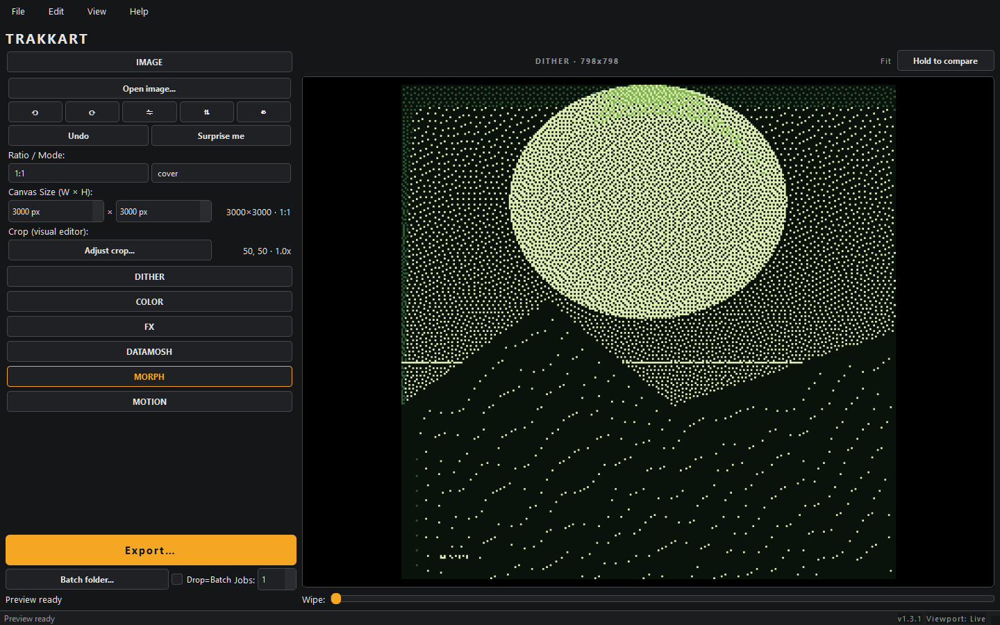

ShardBeats TRAKK SUITE
TRAKKART
Portadas con dithering + animación
La portada de tu beat sin salir de tu máquina: genera stills con dithering, anímalos y exporta el paquete listo para publicar.

Qué hace
- Stills con dithering Estética retro y texturas controladas, con vista previa al 100% y zoom para revisar cada píxel.
- Anímalos Convierte tus stills en animaciones con densidad de partículas que escala al tamaño del lienzo.
- Presets y paletas Presets y paletas incluidos, modo ASCII y CLI para procesar sin abrir la interfaz.
- Exporta el paquete Still + animación listos para YouTube, Spotify y redes, todo generado en local.
Cómo se usa
- Crea tu still Elige preset y paleta, ajusta el lienzo con fit, zoom y pan.
- Aplica dithering Revisa al 100% y compara variantes lado a lado.
- Anímalo Activa el movimiento y previsualiza el resultado.
- Exporta Genera el paquete final sin subir nada a internet.
Ficha técnica
| Version | 1.4.0 |
|---|---|
| Salida | Stills + animación (paquete listo para publicar) |
| Sistema | Windows 10 / 11 (64 bits) |
| Distribución | .exe portable e instalador |
| Licencia | MIT |
Preguntas frecuentes
¿Necesito internet para usarlo?
No. Todo el proceso ocurre en tu equipo, sin cuentas ni telemetría.
¿Es gratis?
Sí. Licencia MIT, sin cuenta y sin límite de uso.
¿Puedo usarlo desde la terminal?
Sí. El modo CLI procesa presets y paletas sin abrir la interfaz.
¿Las portadas sirven para Spotify y YouTube?
Sí. Exportas el paquete con el still y la animación listos para cada plataforma.
Otras herramientas de la suite
Siete herramientas independientes. Usa solo la que necesites.
TRAKKCONVERTER
Samples al WAV del SP-404MK2
TRAKKSTUDIO
Tres herramientas en una ventana
TRAKKNORMALIZER
Normalización por pico, clip por clip
TRAKKNAME
Generador de títulos de beats
TRAKKOUT
Beat + artwork a video 1080p
TRAKKLICENSE
Contratos de licencia en PDF